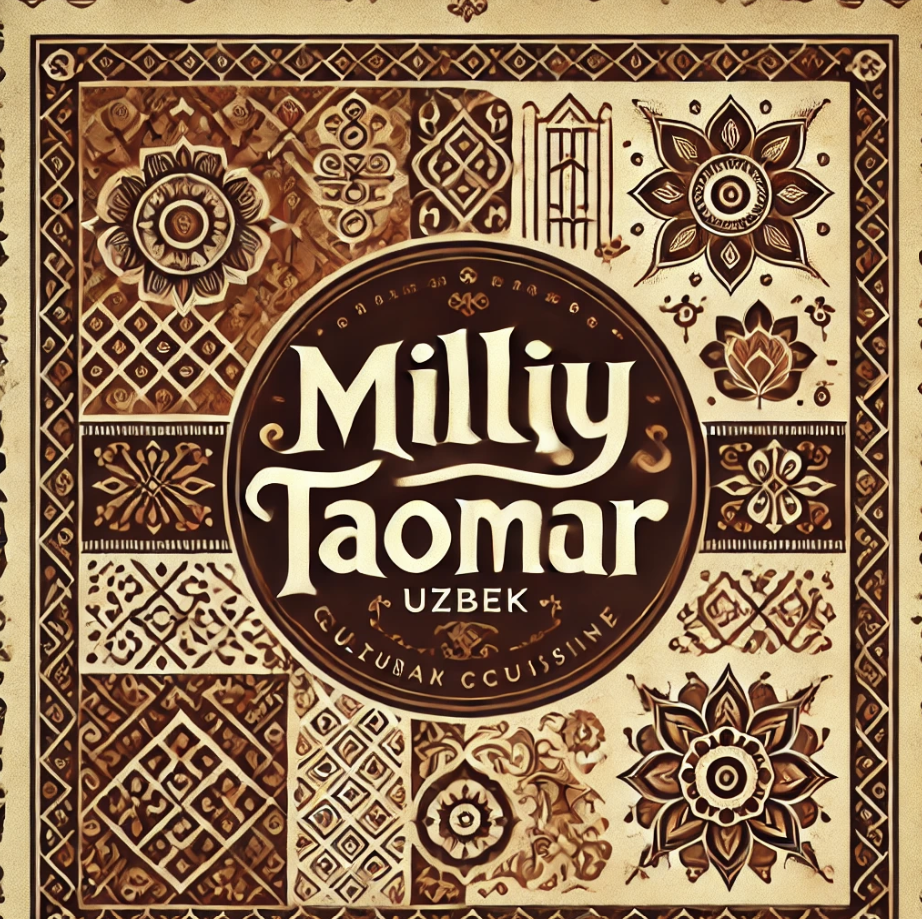

Xush kelibsiz
Restoran
Tushlik menyusi
Kechki ovqat menyusi
Biz bilan bog'lanish
Tushlik Menyusi
Milliy Taomlar
Osh
25,000 so'm
An'anaviy o'zbek taomi, guruch, sabzavotlar va go'shtdan tayyorlanadi.
Manti
20,000 so'm
Buqsimonsimon go'shtli taom, asosan qo'y go'shti va piyozdan tayyorlanadi.
Shashlik
18,000 so'm
Grilda pishirilgan go'sht yoki baliq bo'laklari, ko'pincha o'simlik yog'ida marinadlangan.
Samsa
15,000 so'm
Xamir ichiga go'sht yoki sabzavotlar solib pishirilgan ovqat.
Salatlar
Achchiq-chuchuk
10,000 so'm
Achchiq va chuchuk tamli salat, turli sabzavotlardan tayyorlanadi.
Olivye
12,000 so'm
Rossiya taomi bo'lib, qaynatilgan kartoshka, tuxum, go'sht va bodringdan tayyorlanadi.
Chimchik
11,000 so'm
Piyoz va sabzavotlar bilan aralashtirilgan ozgina achchiq salat.
Sharqona salat
13,000 so'm
Yangi sabzavotlar va achchiq-chuchuk tamli salat.
Ichimliklar
Qora choy
3,000 so'm
O'zbek choyi, asosan qora choy, kuchli ta'mli.
Yashil choy
3,500 so'm
Yashil choy, o'ziga xos yengil tamli.
Kompot
4,000 so'm
Mevalardan tayyorlangan shirin ichimlik.
Sharbat
5,000 so'm
Yangi siqilgan meva sharbatlari.